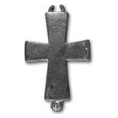

Catalog › CE-0425 · SYR2012-2
Valvă de encolpion (revers), cat. 2, NMIU Kiev
sec. X–XI (901–1100) · loc necunoscut · Muzeul Național de Istorie a Ucrainei (НМИУ), Kiev; colecția „siriană” B. I. și V. N. Hanenko, inv. в 4626/301 (4763)
single valve of a reliquary cross, altul; c. X–XI (901–1100); find spot unknown; kept at Muzeul Național de Istorie a Ucrainei (НМИУ), Kiev; colecția „siriană” B. I. și V. N. Hanenko.


Identificare
- Categorie
- Valvă izolată
- Material
- Altul
- Tehnică
- Gravare (incizie)
- Dimensiuni
- Î 69 × L 51 × Gr 7 mm
Iconografie
- Revers
- Maica Domnului Orantă
- Descriere revers
- Imagine ștearsă a Maicii Domnului Orantă în picioare; pe brațele laterale, cruci cu patru brațe cu o cruce oblică la mijloc; deasupra capului, inscripție pe două rânduri. Imaginile și inscripțiile sunt incizate cu linii fine; contururile Maicii Domnului (cap, nimb și, posibil, suport) și ale crucilor laterale sunt completate cu ciupituri, veșmântul cu hașuri.
- Inscripții
- [H]AГIAΘ / [ЄOT]OKOC
- Limba
- Greacă
Datare și atribuire
- Datare
- sec. X–XI (901–1100)
- Tipologie
- tip Lingby (Typ 3.3.1 după Staecker 1997; 1999), variantă cu inscripția Η ΑΓΙΑ ΘΕΟΤΟΚΟΣ
Descoperire
- Context
- Colecție (fără context)
- Coordonate
- 50.4536° N, 30.5164° E
- Precizia locului
- Loc de păstrare (loc de descoperire incert)
Păstrare și referințe
- Colecție
- Muzeul Național de Istorie a Ucrainei (НМИУ), Kiev; colecția „siriană” B. I. și V. N. Hanenko
- Nr. inventar
- в 4626/301 (4763)
- Bibliografie
- A. A. Пескова, Л. В. Строкова, Христианские древности Византии в «Сирийской коллекции» Б. И. и В. Н. Ханенко, Sankt-Petersburg–Kiev, 2012, 225 p. [Peskova, Strokova 2012], p. 62, cat. nr. 2, ilustrația (fotografie și desen) de la p. 62.
- Figura
- ilustrația la cat. nr. 2
- Planșe
- Peskova, Strokova 2012, p. 62
- Observații
- Valva posterioară; suprafața exterioară foarte tocită, urechile de sus îndoite. Între urechile de jos, pe tija de legătură, s-a păstrat un fragment de ureche de la valva anterioară a aceleiași cruci. Autoarele o consideră o variantă rară a tipului Lingby (inscripția Η ΑΓΙΑ ΘΕΟΤΟΚΟΣ în loc de MHP ΘΥ), cunoscută în 8 exemplare; inscripția ΘΕΟΤΟΚΟΣ stă deasupra capului, iar crucile laterale au forma părții de sus a crucii din răstignirea valvei anterioare. Dimensiuni în sursă (în paranteză, înălțimea cu urechile): 6,9 (8,4)×5,1 cm; grosime 0,7 cm. Vechiul număr de inventar al Muzeului de Artă Hanenko (1925) este cel din paranteză. Album Hanenko, vol. III (needitat): tabla XLIV, nr. 454. Atribuirea autoarelor: Bizanț, sec. X–XI. Locul descoperirii nu este dat în sursă. Material în sursă: aliaj de cupru. Locul descoperirii nu e cunoscut cu precizie; punctul de pe hartă marchează locul de păstrare (Muzeul Național de Istorie a Ucrainei), nu locul descoperirii. Coordonate: nu sunt date în sursă.
Citare: Corpus Encolpiorum, CE-0425, Valvă de encolpion (revers), cat. 2, NMIU Kiev, --root/piese/SYR2012-2/ (accesat 2026-10-17).